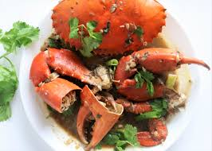
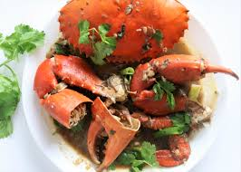

Start the week off right
Everyday Categories
Everyday Food has developed recipes with the home cook in mind. These delicious dishes featured on "RY Paris" call for simple ingredients tat you already have in your pantry or can easily find at local grocery stores and farmer's markerts


Healthy Recipes of the Week
This Weeks top award winners to citically-accclaimed recipe gems, check out these original recipes from home cook and professional chefs around the country.


Where to Eat
This is not the aspirational fluff of Instagram wall neon; it's fact. Recent surveys have shown that a majority of travelers consider food first when planning a trip, even ahead of where they sleep. Add to this that people are also traveling more than ever before – earthlings logged a record-breaking 1.4 billion international trips last year – and it’s safe to say that the hunger for new culinary experiences is more ravenous than ever.
While the endlessly alluring bistros of Paris, izakayas of Tokyo, shawarma stands of Tel Aviv, and tasting menus of Mexico City will always top many people’s lists to cravings, we’re continually on the lookout for something new to fill our bellies our passports, and out feeds.

 
